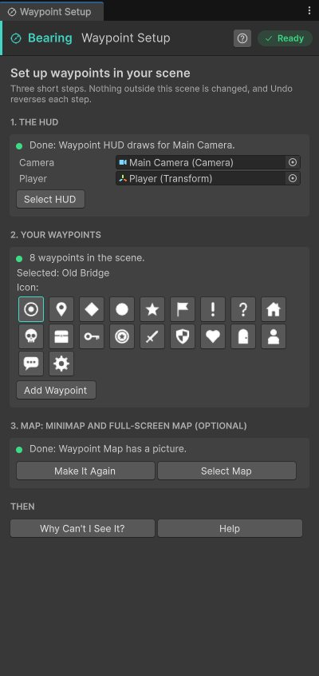
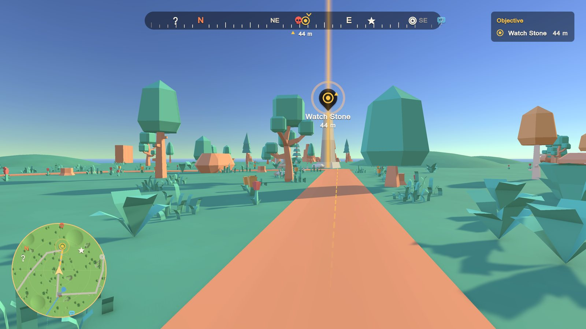

Quick start
Waypoints in your own scene in about five minutes. No code.
1. Add the HUD #


Open Tools > Bearing > Setup Wizard. Step 1 finds your camera and your player (tagged Player, or with a Character Controller). Pick a look (Explorer, Tactical, Minimal or Holo) and press Add HUD.
The HUD shows in the Game view straight away, even before you press Play.
2. Mark your objects #
Select the objects players should find (an objective, a shop, a door, a friend) in the Hierarchy or the Scene view. In step 2 of the wizard, pick an icon and press Add Waypoint. Each object gets a Waypoint named after it ("SM_Old_Mill" becomes "Old Mill").
You can also use Add Component > Bearing > Waypoint, or right-click in the Hierarchy and choose Bearing > Waypoint.
3. Pick the objective #
Select the most important waypoint and tick Current objective. It gets the objective colour, a gentle pulse, its name on screen, and it is shown first when the screen is crowded.
4. Press Play #


Walk around. Objects on screen get a marker, objects off screen or behind you get an arrow at the edge with the distance, and everything shows on the compass and the radar.
5. Optional: a map under the radar #
Step 3 of the wizard adds a Waypoint Map sized to your scene and takes a picture from above, so the radar works as a minimap. See Map under the radar.
Want to see everything working first? #
Tools > Bearing > Create Example Map makes a small level in a new scene with every map feature in use: a place to discover, the objective with a beacon, a travel point locked behind it, a region uncovered by a lookout tower, a search area, the player's pins, search, and saving on F5 and F9. Press Play and walk (WASD, M for the map).
Something not showing? #
Open Tools > Bearing > Why Can't I See It?. It checks the scene, fixes common problems in one click and explains every waypoint in plain words. While playing, press F8 for the same answers in the game (add the Waypoint Debug Overlay component to the HUD).